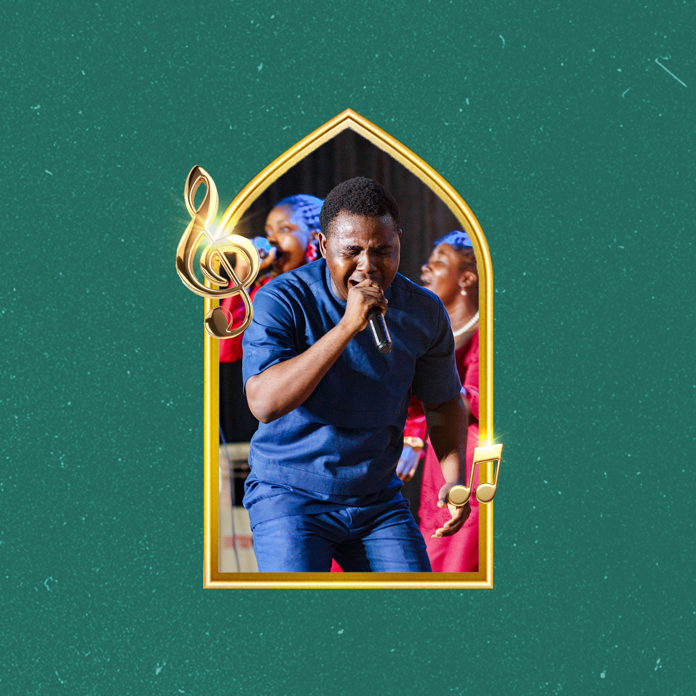
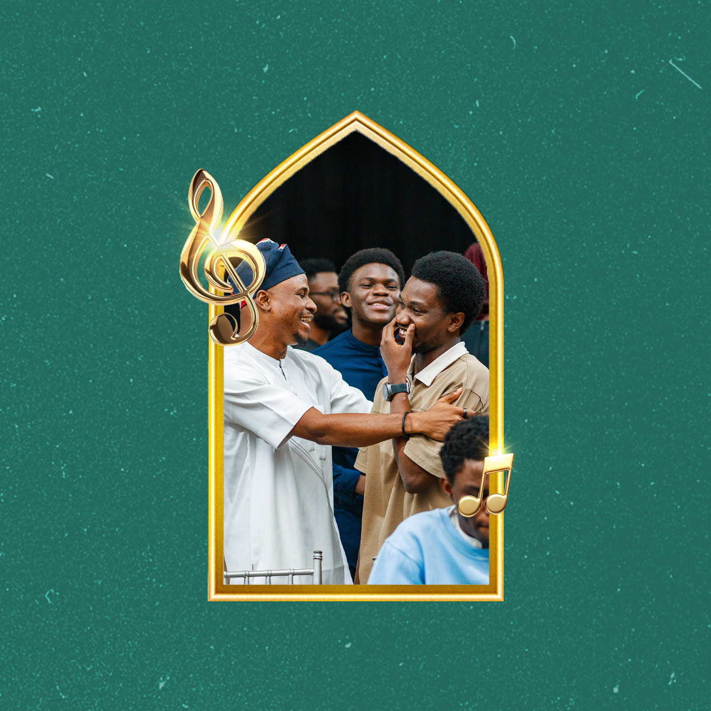
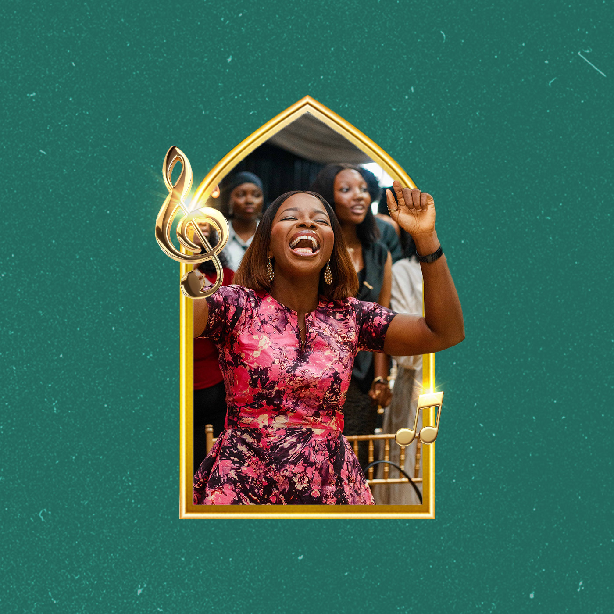
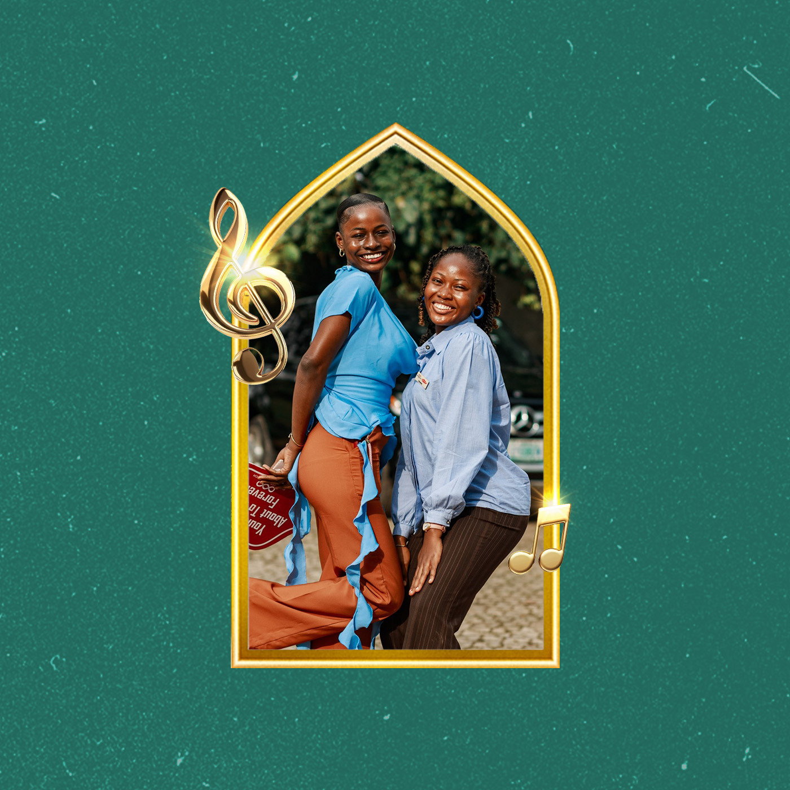
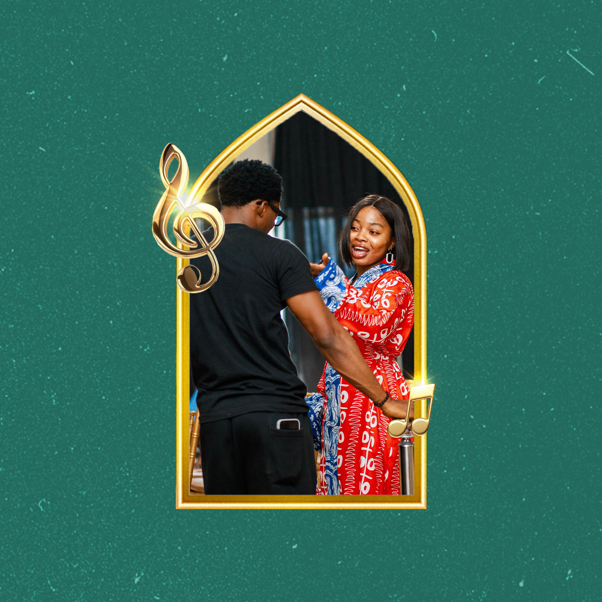
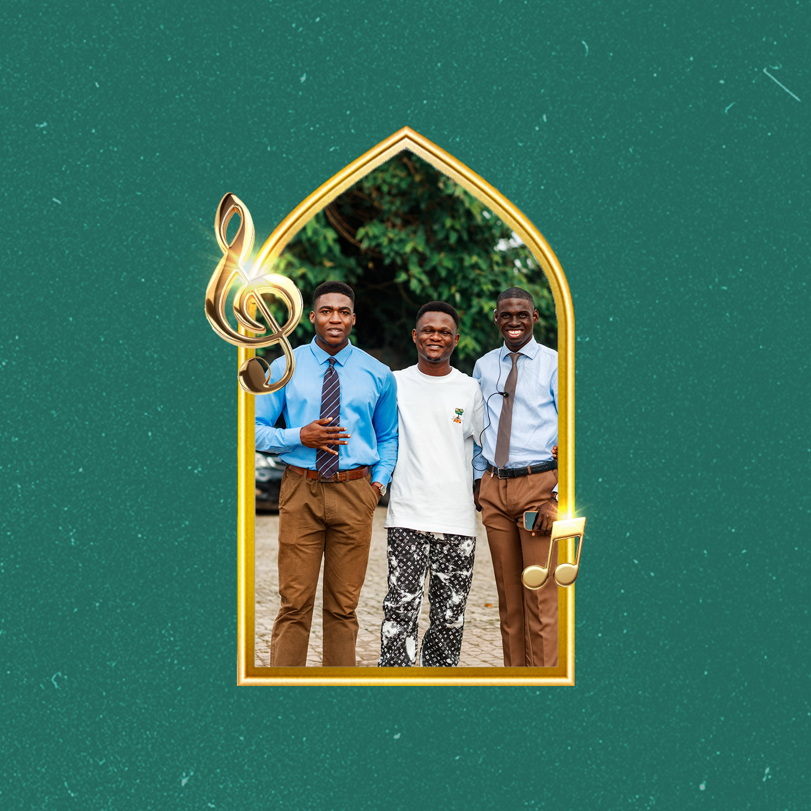
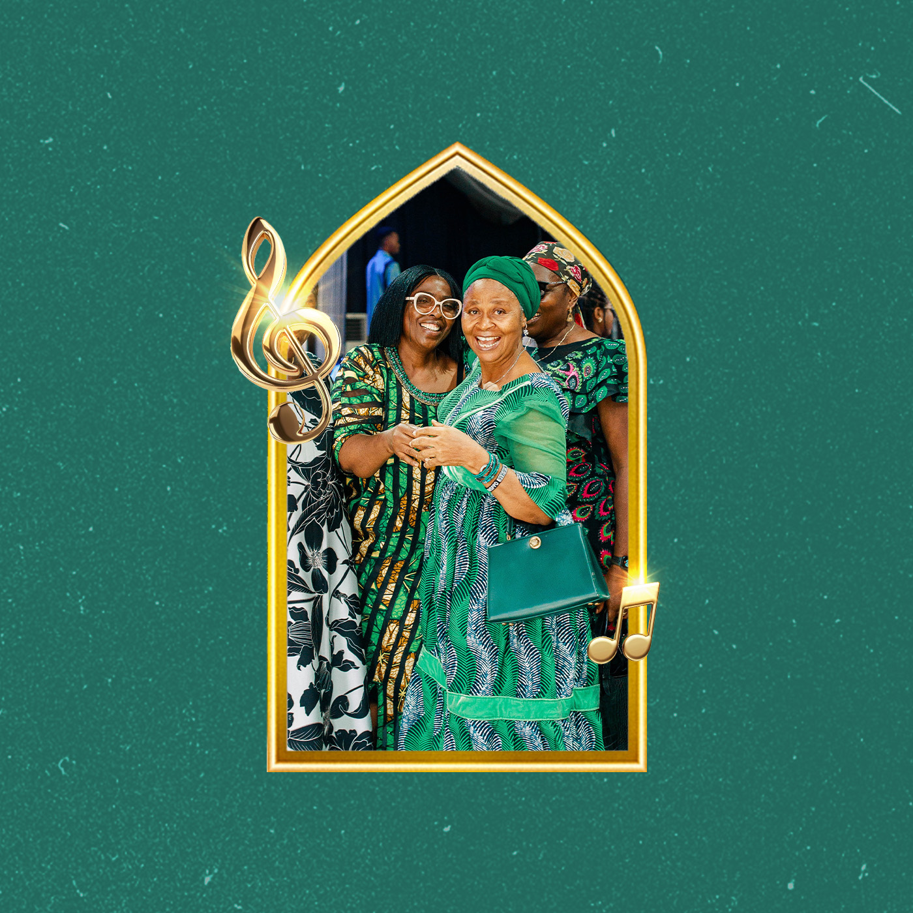
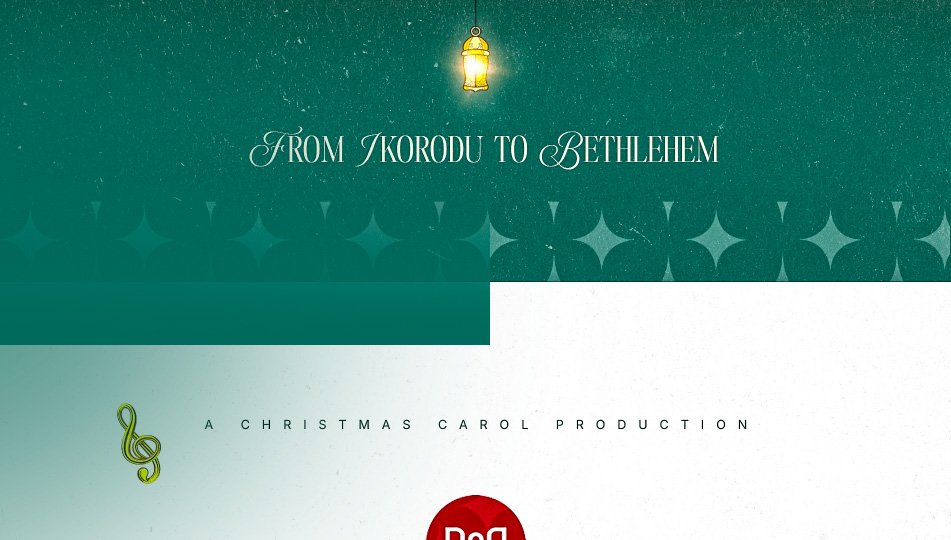

Please open it on a laptop or tablet screen for the full experience.


04 / Assignment Breakdown
The Central Coordinating Wing oversees the entire Christmas Carol planning. Below is the breakdown of their assignments:
Supervising all units to ensure seamless coordination and execution of the event.
Managing budgets, equipment, and personnel across every department.
Setting timelines, milestones, and contingency plans for the Christmas Carol.

05 / Assignment Breakdown
The Sound & Light unit delivers audio excellence and visual impact. Below is the breakdown of their assignments:
Managing live sound mixing to balance vocals, instruments, and playback during the event.
Setting up and testing all microphones, speakers, monitors, and audio gear before the program.
Planning and executing lighting to highlight key moments and set the mood of the celebration.
Providing real-time troubleshooting and ensuring uninterrupted sound and light throughout the event.

06 / Assignment Breakdown
The Program unit choreographs the flow of the Christmas Carol. Below is the breakdown of their assignments:
Structuring the sequence of activities, from opening to the closing of the event.
Coordinating smooth transitions between performances, speeches, and segments.
Managing timings, cues, and the on-stage flow throughout the celebration.

07 / Assignment Breakdown
The Protocol unit guards order and etiquette at the Christmas Carol. Below is the breakdown of their assignments:
Guiding guests to their seats and maintaining order during the event.
Planning seat allocation for guests, VIPs, and members of the congregation.
Ensuring the occasion remains dignified, courteous, and well-mannered throughout.

08 / Assignment Breakdown
The Comms & Social Media units keep everyone connected and the world watching. Below is the breakdown of their assignments:
Relaying announcements and updates between units to ensure everyone stays aligned.
Managing on-ground walkie-talkie and intercom systems for real-time coordination during the event.
Designing graphics, recording videos, and writing posts to promote the event across platforms.
Streaming key moments and responding to comments to build excitement before and after the event.

09 / Assignment Breakdown
The Ambience & Design units craft the atmosphere of the Christmas Carol. Below is the breakdown of their assignments:
Designing and installing decorations that transform the space into a warm, festive environment.
Building and arranging the stage layout to support performances and create visual impact.
Developing the look and feel — colours, banners, and signage — across the venue.

10 / Assignment Breakdown
The Photography, Videography & Storytelling unit captures and preserves every moment of the Christmas Carol. Below is the breakdown of their assignments:
Documenting the event through stills — moments, faces, and details worth remembering.
Filming key performances and highlights to preserve the celebration on screen.
Crafting the narrative of the Christmas Carol for future sharing and reflection.

Color Suggestions


PROPOSAL / CHRISTMAS CAROL